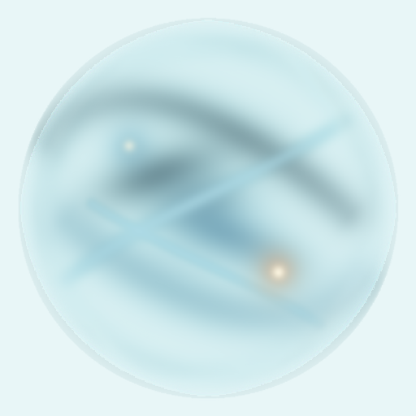
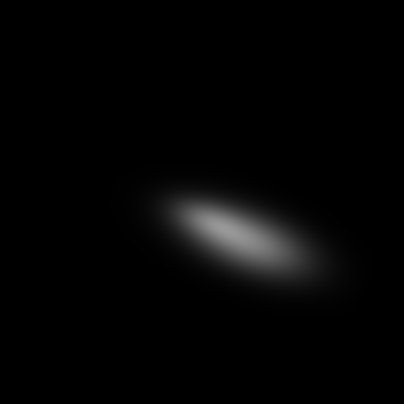
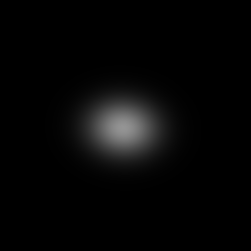
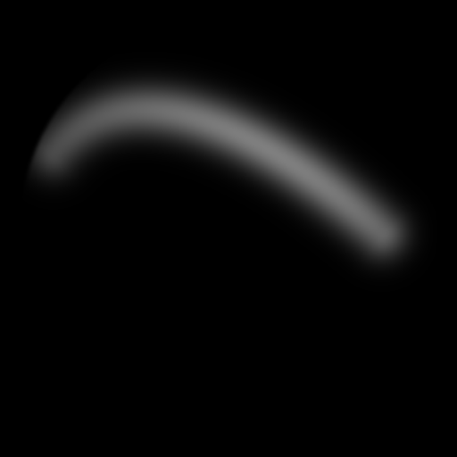
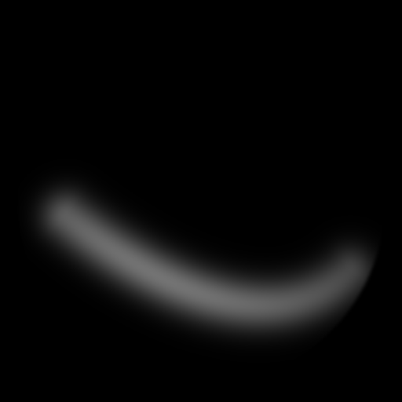
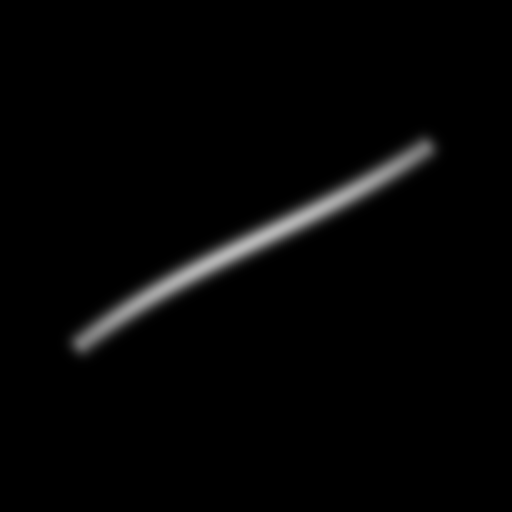
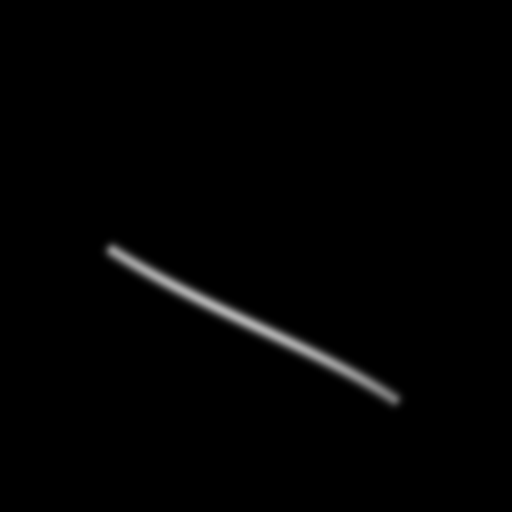
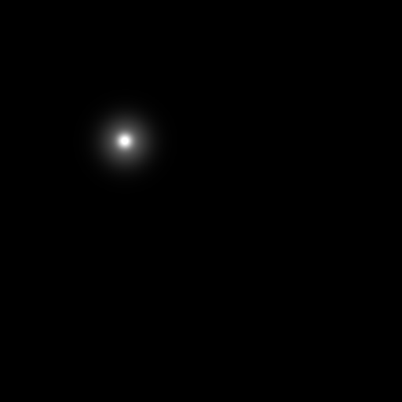
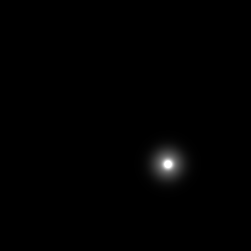
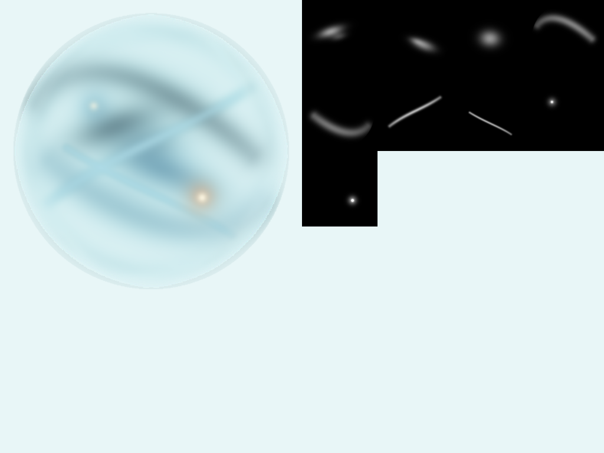

M2.2 GEOMETRY CARRIER · G2
verification-only · second structural cycle · M1 sources frozen · no production migration
STRUCTURED INTERNAL CARRIER

两条相向质量带、四层有序流层、左上冷点与右下暖点；几何只是验证载体，不是生产材质。
LAYER TOPOLOGY









G2 仍是 route-review spike；它不改写 neutral-water-volume、thickness、detail 或 formal film，也不把 Final Art PNG 直接当 shader 输入。
COMPARISON